Welcome to Photoshop CS6
ຍິນດິຕ້ອນຮັບເຂົ້າສູ່ໜ້າເວັບບົດຮຽນໂຟ້ຊ້ອບ

ຍິນດິຕ້ອນຮັບເຂົ້າສູ່ໜ້າເວັບບົດຮຽນໂຟ້ຊ້ອບ

ເລີ່ມຕົ້ນການຮຽນຮູ້ຂອງແຕ່ງຮູບພາບ ແລະ ການອອກແບບກຣາຟິກດີຊາຍທີ່ສວຍງາມທັນສະໄໝ
Photoshop CS6 ຈະແຕກຕ່າງຈາກ CS3, CS4, CS5 ພຽງແຕ່ໜ້ອຍດຽວ ພື້ນຖານຂອງໂປຣແກຣມ ຍັງຄືເກົ່າ ແຕ່ຈະປັບປ່ຽນການໃຊ້ໃຫ້ງ່າຍຂຶ້ນ ມີການເກັບຮວບຮວມເຄື່ອງມືທີ່ກ່ຽວຂ້ອງເອົາໄວ້ໃນເມນູທີ່ດຽວກັນ ເພີ່ມຊຸດເຄື່ອງມືເຂົ້າມາໃໝ່ ແລະ ຍັງຫຼຸດຂັ້ນຕອນການເຮັດວຽກໃຫ້ໜ້ອຍລົງ ເຮັດໃຫ້ໃຊ້ງານສະດວກຫຼາຍຂຶ້ນໃນເວີຊັ້ນນີ້ໄດ້ເພີ່ມແຖບເຄື່ອງມືທີ່ໄດ້ໃຊ້ເປັນປະຈໍາ ວາງແຍກອອກມາຈາກກຸ່ມເຄື່ອງມືເດີມໆ ເຊິ່ງໜ້າຈໍໃໝ່ຂອງໂປຣແກຣມ photoshop cs6 ກໍ່ຈະມີສ່ວນປະກອບດັ່ງຮູບລຸ່ມນີ້:
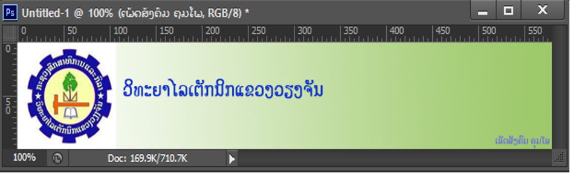ຮູບທີ 35 ຮູບຕົວຢ່າງທີ່ມີການໃຊ້ເລເຢີ
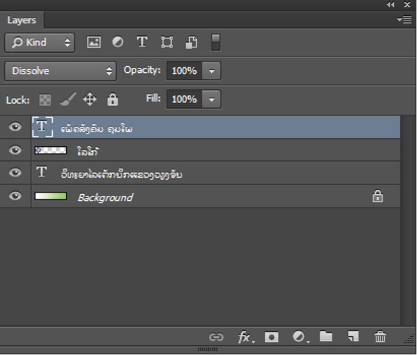ຮູບທີ່36: ສະແດງເລເຢີທຸກຕົວທີ່ເຮົາໃຊ້
1. ເລືອກໂໝດການເຮັດວຽກຂອງ Layer
2. ກຳນົດຮູບແບບການປະສານສີລະຫວ່າງ Layer
3. ກຳນົດຮູບແບບການລ໋ອກ Layer
4. ສັນຍາລັກການສະແດງ/ປິດ Layer
5. ກຳນົດລິງ/ຍົກເລີກລິ່ງ
6. ສ້າງ Effect Layer
7. ສ້າງ Layer Mask
8. ສ້າງ Adjustment Layer
9. ສ້າງ Group Layer
10. ສ້າງ Layer ໃໝ່
11. ລົບ Layer
12. ສັນຍາລັກ Lock layer
13. ຊື່ Layer
14. Layer ທີ່ກຳລັງເລືອກ ແລະ ເຮັດວຽກ
15. ກຳນົດຄວາມໂປ່ງແສງຂອງຮູບພາບ
16. ກຳນົດຄວາມໂປ່ງໃສຂອງຮູບພາບ
17. ສະລັບການສະແດງເລເຢີທີ່ຄັດກອງ ຫຼື ສະແດງເລເຢີທັງໝົດ
18. ຄັດກອງເລເຢີໂດຍແຍກຕາມປະເພດ

ຮູບທີ 37 ສະແດງສ່ວນປະກອບຂອງ Palette Layer
ການສ້າງເລເຢີໃໝ່ ຈະສ້າງຂຶ້ນເມື່ອຕ້ອງການລະບາຍສີ ຫຼື ສ້າງຊິ້ນງານໃໝ່ ໂດຍບໍ່ຕ້ອງການປັບແຕ່ງເລເຢີເດີມ ເຊິ່ງສາມາດເພີ່ມເລເຢີໄດ້ຫຼາຍວິທີດັ່ງນີ້:

ຮູບທີ 38 ສະແດງການສ້າງເລເຢີໃໝ່
ນອກຈາກນີ້ຍັງສາມາດສ້າງເລເຢີເປົ່າໂດຍການຄິກເມນູ Layer > New > Layer ຫຼື ກົດປຸ່ມທາງຄີບອດ Alt+ ຈະປະກົດໜ້າຕ່າງຄຳສັ່ງສຳລັບກຳນົດອ໋ອບຊັນເພີ່ມເຕີມໃຫ້ເລເຢີໃໝ່ທີ່ສ້າງຂຶ້ນ ດັ່ງຮູບ:

ຮູບທີ 39 ສະແດງການສ້າງເລເຢີໃໝ່
A. ຕັ້ງຊື່ໃຫ້ເລເຢີ
B. ສ້າງເລເຢີເປັນ Clipping Mask
C. ຄິກເລືອກສີຈັດໝວດໝູ່ໃຫ້ເລເຢີ
D. ກຳນົດໂໝດໃຫ້ເລເຢີ ແລະ ກຳນົດຄວາມໂປ່ງໃສໃຫ້ເລເຢີ
E. ກຳນົດໃຫ້ໃສ່ສີໃນກໍລະນີກຳນົດ Vlend Mode ໃຫ້ເລເຢີ
ການນຳໄຟລຮູບພາບອື່ນເຂົ້າມາ ໃນໄຟລຮູບພາບທີ່ເປີດໃຊ້ງານຢູ່ກໍ່ຈະເກີດເລເຢີໃໝ່ ເພື່ອເກັບຮູບພາບນັ້ນ ສາມາດເຮັດໄດ້ດັ່ງນີ້:
1. ໄຟລຮູບພາບທີ່ເປີດໃຊ້ງານ ດັ່ງຮູບ
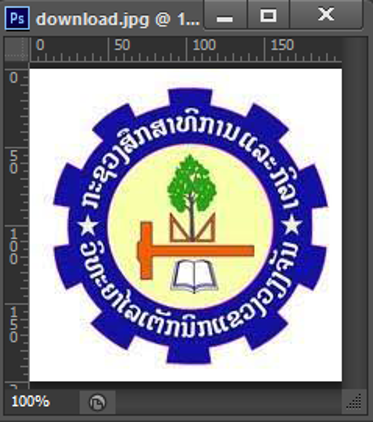ຮູບທີ 40 ສະແດງໄຟລຮູບພາບທີ່ເປີດໃຊ້ງານ
2. ນຳເຂົ້າໄຟລອ່ນເຂົ້າມາດ້ວຍຄຳສັ່ງ File > Place ດັ່ງຮູບ
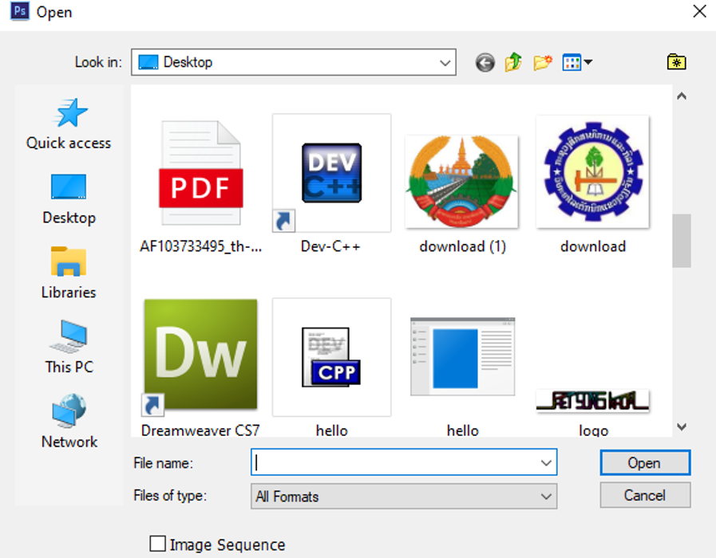ທີ 41 ສະແດງໜ້າຕ່າງການເຮັດວຽກຂອງ Place
ເລືອກໄຟລຮູບພາບທີ່ຕ້ອງການນຳເຂົ້າຄິກປຸ່ມ Place ຈະໄດ້ໄຟລຮູບພາບໃໝ່ເຂົ້າມາຈັດການປັບຂະໜາດ ແລະ ການຈັດວາງຮູບພາບຕາມຕ້ອງການດັ່ງຮູບ37 ລຸ່ມນີ້ເຮົາຈະເຫັນເລເຢີໃໝ່ຂຶ້ນມາໃນພາເລດເລເຢີດັ່ງຮູບທີ 38

ຮູບທີ 42 ສະແດງໄຟລຮູບພາບທີ່ນໍາເຂົ້າມາ

ຮູບທີ 43 ສະແດງເລເຢີໃໝ່ຂຶ້ນມາ
ເປັນການສ້າງເລເຢີໂດຍການຄັດລອກຮູບພາບມາຈາກໄຟລອື່ນເຂົ້າມາໄວ້ໃນໄຟລຮູບພາບທີ່ຕ້ອງການເຊິ່ງອາດຈະຄັດລອກບາງສ່ວນຂອງຮູບພາບ ຫຼື ຄັດລອກຮູບພາບທັງໝົດ ການຄັດລອກແບບນີ້ຈະມີ 2 ແບບຄື ການຄັດລອກແບບປົກະຕິ ( Copy ) ແລະ ການຄັດລອກສ່ວນທີ່ເລືອກທຸກເລເຢີ (Copy Merge)ເຊິ່ງການສ້າງເລເຢີດ້ວຍຄຳສັ່ງ Copy ແລະ Paste ມີວິທີການດັ່ງນີ້:
1) ໄຟລຮູບພາບທີ່ເປີດໃຊ້ງານ
2) ເປີດໄຟລຮູບພາບທີ່ຕ້ອງການຄັດລອກ ແລະ ໃຊ້ເຄື່ອງມື Selection ເລືອກສ່ວນທີ່ຕ້ອງການ ຫຼື ເລືອກທັງໝົດໂດຍໃຊ້ຄຳສັ່ງ Select > All ດັ່ງຮູບ
ຮູບທີ 44 ໄຟລຮູບພາບທີ່ເປີດໃຊ້ງານ
ຮູບທີ 45 ສະແດງການຕັດ ຫຼື ຍ້າຍ
3) ຄິກເມົ້າເມນູ Edit > Copy ຫຼື ກົດແປ້ນພິມ Ctrl + c
4) ໄປຍັງໄຟລຮູບພາບທີ່ຕ້ອງການຄັດລອກໄປໄວ້
5) ຄິກເມນູ Edit > Paste ຫຼື ກົດແແປ້ນພິມ Ctrl + V
6) ປັບຂະໜາດ ແລະ ຈັດວາງຮູບພາບຕາມທີ່ຕ້ອງການ ຈະປະກົດ ເລເຢີໃໝ່ຂຶ້ນໃນພາເລດເລເຢີ
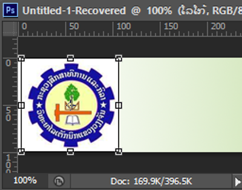ຮູບທີ 46 ໄຟລຮູບພາບທີ່ເປີດໃຊ້ງານ
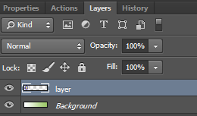ຮູບທີ 47 ສະແດງການເລືອກພື້ນທີ່Copy
ການພິມຂໍ້ຄວາມດ້ວຍເຄື່ອງມື Type Tool ລົງໃນຮູບພາບກໍ່ຈະເກີດເລເຢີໃໝ່ຂຶ້ນມາ ເອີ້ນວ່າ Type Layer ຊື່ຂອງເລເຢີຈະເປັນຊື່ຂອງຂໍ້ຄວາມທີ່ພິມເຊິ່ງມີວິທີການດັ່ງນີ້:
1) ເປີດໄຟລຮູບພາບທີ່ຕ້ອງການພິມພິມຂໍ້ຄວາມຂຶ້ນມາ ດັ່ງຮູບລຸ່ມນີ້:
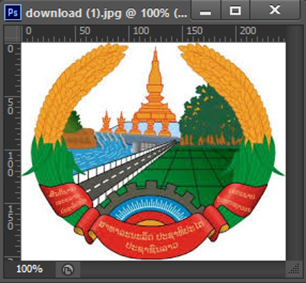ຮູບທີ 48 ສະແດງໄຟລຮູບພາບທີ່ເປີດໃຊ້ງານ
2) ຄິກເລືອກເຄື່ອງມື Horizontal Type Tool ຫຼື Vertical Type Tool
3) ຄິກເລືອກແບບຕົວໜັງສື, ຂະໜາດ, ລັກສະນະ, ສີ ແລະ ການຈັດວາງໃນ Option Bar
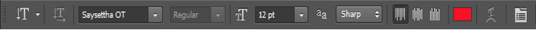
ຮູບທີ 49 ສະແດງການປັບຄ່າໃນ Option Bar
4) ຄິກເມົ້າຕຳແໜ່ງເລີ່ມຕົ້ນການພິມໃນພື້ນທີ່ທີ່ຕ້ອງການ ດັ່ງຮູບລຸ່ມນີ້:
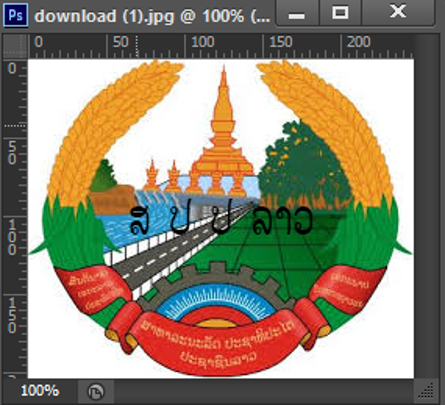ຮູບທີ 50 ສະແດງການພິມຂໍ້ຄວາມ
5) ປະກົດເລເຢີໃໝ່ຂຶ້ນມາໃນພາເລດເລເຢີ ແລະ ມີຊື່ເລເຢີຕາມຂໍ້ຄວາມທີ່ເຮົາພິມດັ່ງຮູບລຸ່ມນີ້
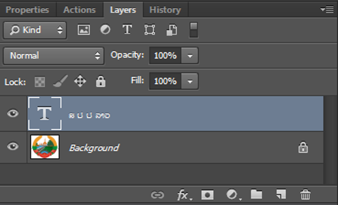ຮູບທີ 51 ສະແດງເລເຢີໃໝ່ເພີ່ມຂຶ້ນ
ກໍລະນີການສ້າງຮູບຊົງດ້ວຍເຄື່ອງມື Shape Tool ກໍ່ຈະໄດ້ເລເຢີໃໝ່ເຊັ່ນກັນ ເອີ້ນວ່າ Shape Layer ແລະມີວິທີການດຽວກັບການພິມຂໍ້ຄວາມ
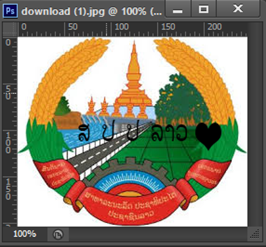ຮູບທີ 52 ສະແດງການແຕ້ມຮູບໂດຍໃຊ້ Shape
ຮູບທີ 53 ສະແດງເລເຢີຂອງ Shape ຂຶ້ນມາ
ໃນຂະນະທີ່ເຮົາກຳລັງຕົບແຕ່ງຮູບພາບເຮົາຕ້ອງເບິ່ງວ່າເຮົານຳໃຊ້ຢູ່ເລເຢີໃດເພາະຖ້າເຮົາເຮັດວຽກໃນເລເຢີທີ່ບໍ່ຖືກຕ້ອງກໍ່ຈະບໍ່ເກີດປະໂຫຍດຫຍັງ ອາດເຮັດໃຫ້ເສຍເວລາໃນການແກ້ໄຂ. ວິທີການສັງເກດໃຫ້ເບິ່ງໄດ້ຈາກແຖບສີທີ່ຂຶ້ນຢູ່ທີ່ເລເຢີນັ້ນ ເຊິ່ງສະແດງວ່າເລເຢີກຳລັງຖືກນຳໃຊ້ຢູ່ເອີ້ນວ່າ Active Layer ແລະເມື່ອຕ້ອງການປ່ຽນເລເຢີໃຊ້ງານໃຫ້ຄິກເມົ້າ 1 ຄັ້ງໃສ່ເລເຢີທີ່ຕ້ອງການຈະປະກົດແຖບສີທີ່ຊັດເຈນຂຶ້ນ ດັ່ງຮູບລຸ່ມນີ້:
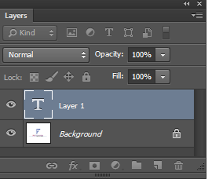ຮູບທີ 54 ສະແດງການໃຊ້ເລເຢີ Layer1
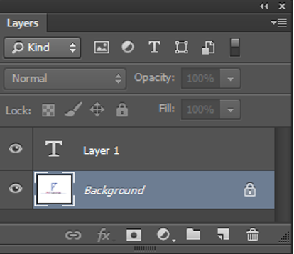ຮູບທີ 55 ສະແດງການໃຊ້ເລເຢີ Background
ໃນຂະນະທີ່ເຮົາກຳລັງຕົບແຕ່ງຮູບພາບເຮົາຕ້ອງເບິ່ງວ່າເຮົານຳໃຊ້ຢູ່ເລເຢີໃດເພາະຖ້າເຮົາເຮັດວຽກໃນເລເຢີທີ່ບໍ່ຖືກຕ້ອງກໍ່ຈະບໍ່ເກີດປະໂຫຍດຫຍັງ ອາດເຮັດໃຫ້ເສຍເວລາໃນການແກ້ໄຂ. ວິທີການສັງເກດໃຫ້ເບິ່ງໄດ້ຈາກແຖບສີທີ່ຂຶ້ນຢູ່ທີ່ເລເຢີນັ້ນ ເຊິ່ງສະແດງວ່າເລເຢີກຳລັງຖືກນຳໃຊ້ຢູ່ເອີ້ນວ່າ Active Layer ແລະເມື່ອຕ້ອງການປ່ຽນເລເຢີໃຊ້ງານໃຫ້ຄິກເມົ້າ 1 ຄັ້ງໃສ່ເລເຢີທີ່ຕ້ອງການຈະປະກົດແຖບສີທີ່ຊັດເຈນຂຶ້ນ ດັ່ງຮູບລຸ່ມນີ້:
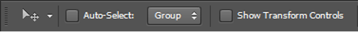ຮູບທີ 56 ສະແດງການປັບຄ່າການເລືອກເລເຢີອັດຕະໂນມັດ
ການປ່ຽນຊື່ເລເຢີແມ່ນມີປະໂຫຍດຫຼາຍໃນການເຮັດວຽກຕົບແຕ່ງຮູບພາບເພາະຈະເຮັດໃຫ້ເຮົາບໍ່ສັບສົນໃນຂະນະທີ່ກຳລັງເຮັດວຽກໃນກໍລະນີທີ່ມີເລເຢີຫຼາຍ ເຊິ່ງມີວິທີການດັ່ງນີ້:
1) ດັບເບີ້ນຄິກທີ່ຊື່ເລເຢີ
2) ປ່ຽນຊື່ເລເຢີທີ່ຕ້ອງການແລ້ວກົດ Enter ດັ່ງຮູບ
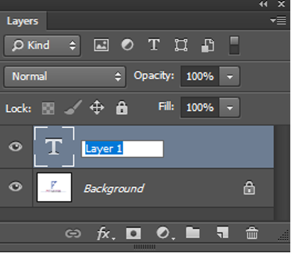ຮູບທີ 57 ສະແດງການປ່ຽນຊື່ເລເຢີ
ໃນການເຮັດວຽກຕົບແຕ່ງຮູບພາບບາງຄັ້ງໃນພາເລດເລເຢີອາດມີເລເຢີຫຼາຍອັນ ເຮັດໃຫ້ເກີດຄວາມສັບສົນ ດັ່ງນັ້ນ ການປ່ຽນສີເລເຢີຈຶ່ງມີປະໂຫຍດໃນການຈັດກຸ່ມ ເພື່ອສະດວກຕໍ່ການແຍກ ເຊິ່ງມີວິທີການໂດຍຄິກເມົ້າຂວາໃສ່ເລເຢີທີ່ຕ້ອງການປ່ຽນສີ > ເລືອກສີ ເລເຢີຈະປ່ຽນສີຕາມທີ່ເຮົາຕ້ອງການ.

ຮູບທີ 58 ສະແດງການປ່ຽນສີເລເຢີ
ເມື່ອມີການເພີ່ມເລເຢີໃໝ່ເຂົ້າມາ ກໍ່ຈະເຮັດໃຫ້ເລເຢີຊ້ອນທັບກັນຢູ່ຕາມລຳດັບທີ່ຖືກສ້າງ ຫາກຕ້ອງການປ່ຽນລຳດັບການຊ້ອນທັບກັນ ແມ່ນຄິກເມົ້າຄ້າງທີ່ເລເຢີທີ່ຕ້ອງການຍ້າຍລຳດັບແລ້ວລາກຂຶ້ນ - ລົງຕາມຕ້ອງການດັ່ງຮູບ ລຸ່ມນີ້:

ຮູບທີ 59 ສະແດງການປ່ຽນລຳດັບເລເຢີ
ເມື່ອຕ້ອງການໃຫ້ເລເຢີຫຼາຍໆເລເຢີເຄື່ອນຍ້າຍຕຳແໜ່ງ ຫຼື ຈັດວາງໃໝ່ໄດ້ພ້ອມໆກັນໂດຍບໍ່ຕ້ອງລາກເທື່ອລະເລເຢີດັ່ງນີ້:
1. ເລືອກເລເຢີທີ່ຕ້ອງການ Link ຫາກເລເຢີຢູ່ຕິດກັນໃຫ້ກົດຄິບອດ Shift ຂະນະທີ່ຄິກເມົ້າເລືອກ ແຕ່ຖ້າເລເຢີຢູ່ຫ່າງກັນໃຫ້ກົດປຸ່ມ Ctrl ຂະນະທີ່ຄິກເມົ້າເລືອກ.
2. ຄິກເມົ້າທີ່ປຸ່ມ Link Layer ທາງລຸ່ມພາເລດເລເຢີ ຈະມີຮູບຄ້າຍຄືກັບໂສ້ທຸກເລເຢີທີ່ເຮົາເລືອກ ດັ່ງຮູບລຸ່ມນີ້:
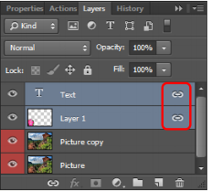ຮູບທີ 60 ສະແດງການ Link Layer
ການປ້ອງກັນເລເຢີ ຫຼື Lock Layer ກໍ່ຄືບໍ່ສາມາດຈັດການຫຍັງກັບເລເຢີໄດ້ເລີຍ ເຊິ່ງໃນໂປຣແກຣມຈະມີຄຸນສົມບັດໃນການ Lock ແຕກຕ່າງກັນ ດັ່ງຮູບລຸ່ມນີ້:

ຮູບທີ 61 ສະແດງຄຸນສົມບັດການ Lock Layer
ມີ 2 ວິທີຄື:
1. ຄິກເລເຢີທີ່ຕ້ອງການລົບແລ້ວຄິກທີ່ປຸ່ມຖັງຂີ້ເຫຍື້ອ
2. ຄິກເລເຢີທີ່ຕ້ອງການລົບ ແລ້ວຄິກປຸ່ມເມນູຂອງພາເລດ ຫຼື ຄິກເມົ້າຂວາໃສ່ເລເຢີທີ່ຕ້ອງການ ແລ້ວເລືອກ Delete Layer ດັ່ງຮູບລຸ່ມນີ້:

ຮູບທີ 62 ສະແດງການລົບເລເຢີ
ສຳລັບເລເຢີຮູບພາບທີ່ຕົບແຕ່ງຮຽບຮ້ອຍແລ້ວ ຫຼື ເລເຢີທີ່ມີຮູບແບບໃກ້ຄຽງກັນເຮົາສາມາດນຳຮູບພາບເຫຼົ່ານັ້ນໃຫ້ເປັປນເລເຢີດຽວກັນໄດ້ ເພື່ອຫຼຸດຈຳນວນເລເຢີ ແລະ ຂະໜາດໄຟລ໌ເຊິ່ງເຮັດໄດ້ຫຼາຍຮູບແບບດັ່ງນີ້:
1. ລວມເລເຢີ Merge Down ເປັນການລວມເລເຢີປະຈຸບັນເຂົ້າກັບເລເຢີທີ່ຢູ່ລຸ່ມໄດ້ໂດຍການຄິກເມນູ Layer>Merge Layer ຫຼື ກົດຄີບອດປຸ່ມ Ctrl+E ດັ່ງຮູບລຸ່ມນີ້:

ຮູບທີ 63 ສະແດງການລວມເລເຢີ Merge Down
2. ລວມເລເຢີ Merge Visible ເປັນການລວມເລເຢີທັງໝົດທີ່ບໍ່ໄດ້ເກັບໄວ້ໃຫ້ກາຍເປັນເລເຢີດຽວກັນ ເຊິ່ງສາມາດເຮັດໄດ້ໂດຍການຄິກເມນູ Layer > Merge Visible ຫຼື ກົດຄີບອດປຸ່ມ Shift+Ctrl+E

ຮູບທີ 64 ສະແດງການລວມເລເຢີ Merge Visible
3. ລວມເລເຢີ Flatten Image ເປັນການລວເລເຢີທັງໝົດໃຫ້ກາຍເປັນເລເຢີ Background ໂດຍການຄິກເມນູ Layer > Flatten image ດັ່ງຮູບລຸ່ມນີ້:

ຮູບທີ 65 ສະແດງການລວມເລເຢີ Flatten Image
ໂດຍປົກກະຕິເມື່ອເຮົາເປີດໄຟລ໌ຮູບພາບຂຶ້ນມາຄັ້ງທຳອິດໃນພາເລດເລເຢີຈະມີຊື່ເລບເຢີວ່າ Background ເຊິ່ງເປັນເລເຢີພື້ນ ໂດຍອັດຕະໂນມັດເຊິ່ງບໍ່ສາມາດເຄື່ອນຍ້າຍໄປໃສໄດ້ເພາະວ່າເລເຢີຖືກລ໋ອກໄວ້ ໂດຍຈະມີສັນຍາລັກເປັນຮູບກຸນແຈຕໍ່ທ້າຍຊື່ເລເຢີ ເຊິ່ງເຮົາສາມາດປ່ຽນເລເຢີ Background ໃຫ້ເປັນເລເຢີປົກະຕິໄດ້ໂດຍມີວິທີດັ່ງນີ້:
1. ດັບເບິ່ນຄິກ ຫຼື ຄິກຂວາທີ່ເລເຢີ Background ຈະປະກົດໜ້າຕ່າງ New Layer ຂຶ້ນມາດັ່ງຮູບລຸ່ມນີ້:
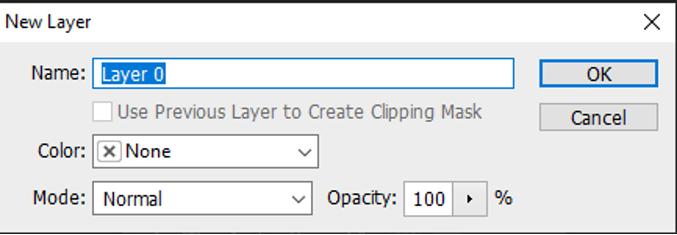ຮູບທີ 66 ສະແດງການປ່ຽນຊື່ເລເຢີ Background
2. ຕັ້ງຊື່ເລເຢີໃໝ່ Name
3. ຄິກປຸ່ມ OK
ພ້ອມແລ້ວທີ່ຈະເຂົ້າການຕັດຕໍ່ຮູບພາບ ແລະ ການອອກແບບຕາມຄວາມຕ້ອງການທີ່ຈະດີຊາຍອອກມາໃນແບບຂອງເຮົາ